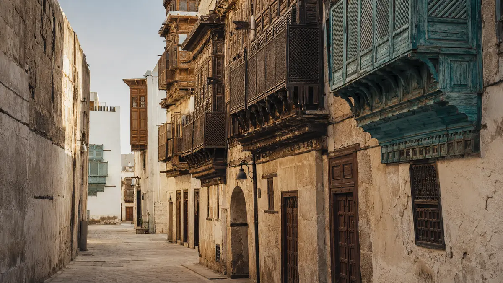

Private Heritage Walk
A focused walking tour.

A private walk through Al-Balad led by a licensed guide who connects the architecture, people and stories of the city.
All walking formats include Arabic coffee, dates and entry to Beit Nassif.
A focused walking tour.
Licensed guide plus an Aventura organizer.
Private walk with coordinated transport.
Executive vehicle coordinated with the guide.